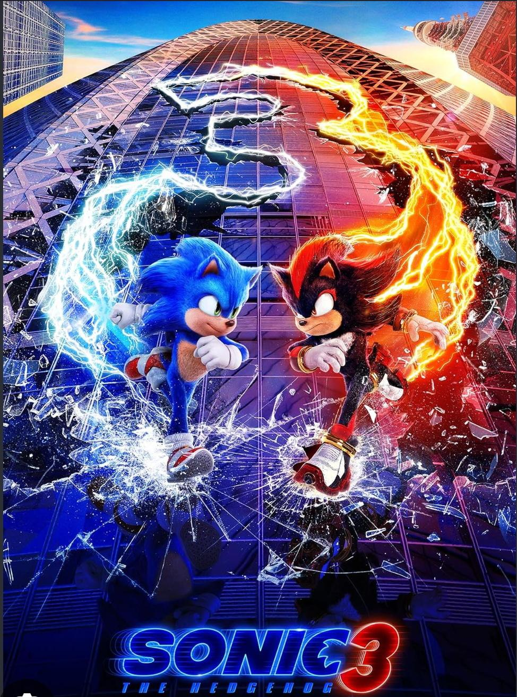

Tujuan Kegiatan
Peserta mengenal cara developer menyusun informasi, menggunakan tools, membaca error, dan membangun sesuatu secara bertahap.
PROJECT APLIKASI WEB
Satu Web, Banyak Layar - Layout Responsif
Peserta mengenal cara developer menyusun informasi, menggunakan tools, membaca error, dan membangun sesuatu secara bertahap.
